Question 1 [3]
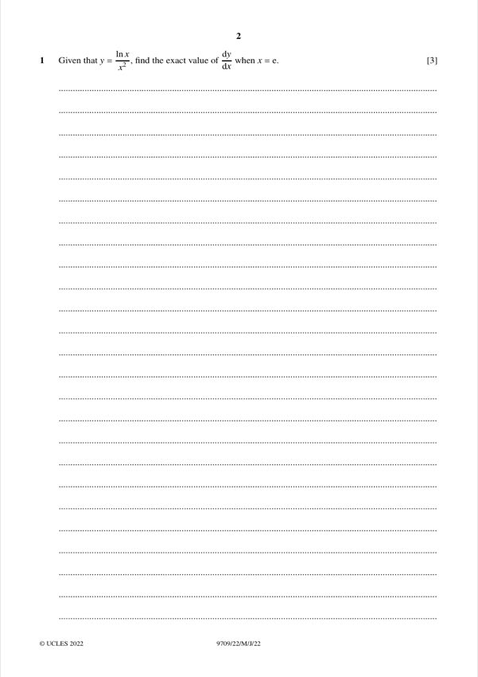
Original paper page 2
Given y = (ln x)/x², find the exact value of dy/dx when x = e.
dy/dx = (x − 2x ln x)/x⁴ = (1 − 2ln x)/x³
At x = e: (1 − 2)/e³ = −1/e³
dy/dx = −1/e³
Mathematics Paper 2 (Pure Mathematics 2)

Given y = (ln x)/x², find the exact value of dy/dx when x = e.
dy/dx = −1/e³
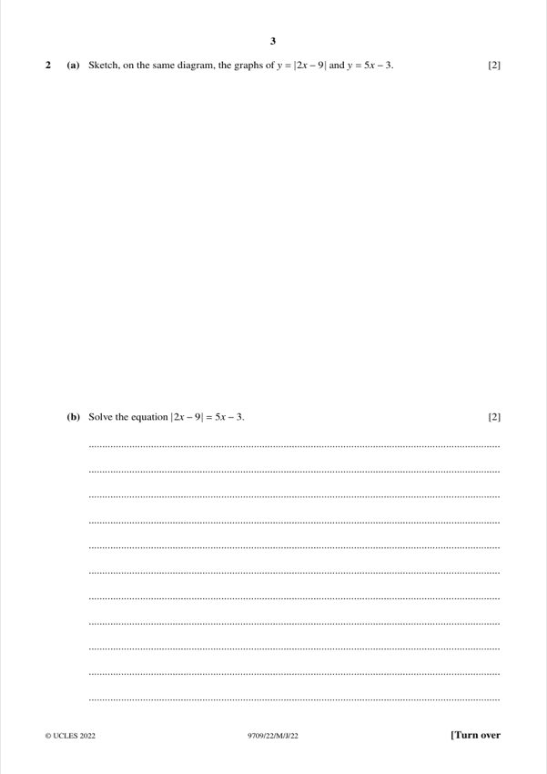
(a) [2] Sketch on the same diagram y = |2x − 9| and y = 5x − 3.
Two graphs intersect once (see sketch).
(b) [2] Solve 2x − 9 = 5x − 3 (signs of 2x − 9 and 5x − 3 must match).
x = 12/7 ≈ 1.71
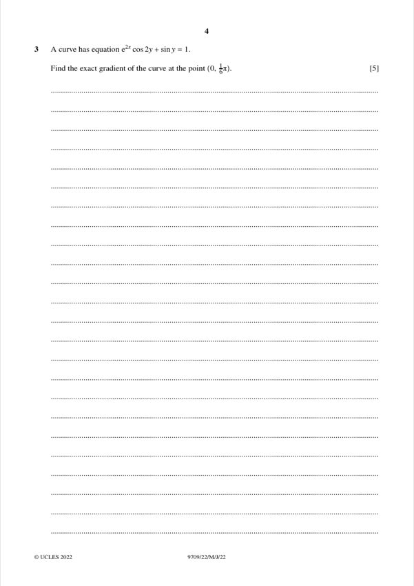
The curve e²ˣcos2y + sin y = 1. Find the exact gradient at (0, π/6).
Gradient = 2/√3 = 2√3/3
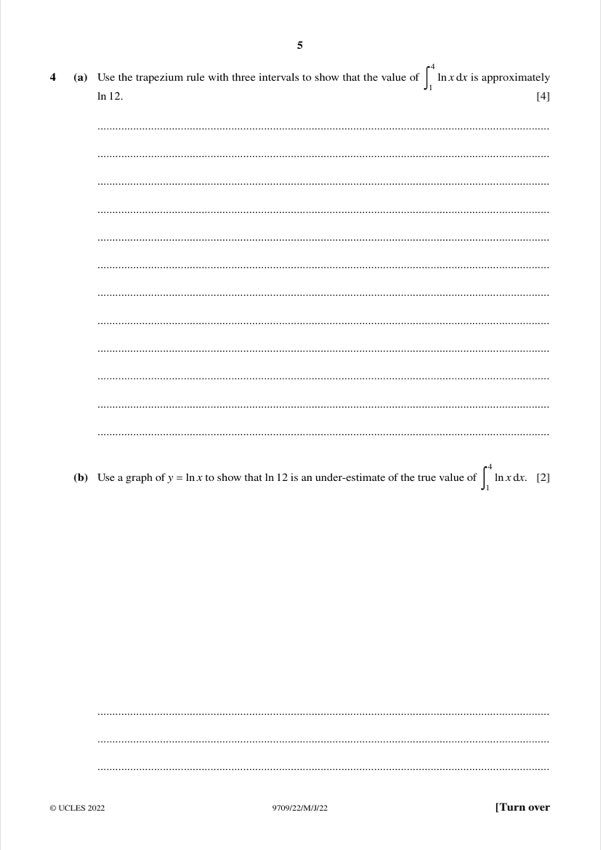
(a) [4] Use the trapezium rule with three intervals to show ∫₁⁴ ln x dx ≈ ln 12.
≈ ln 12
(b) [2] Use a graph of y = ln x to show that ln 12 is an under-estimate.
ln 12 is an under-estimate.
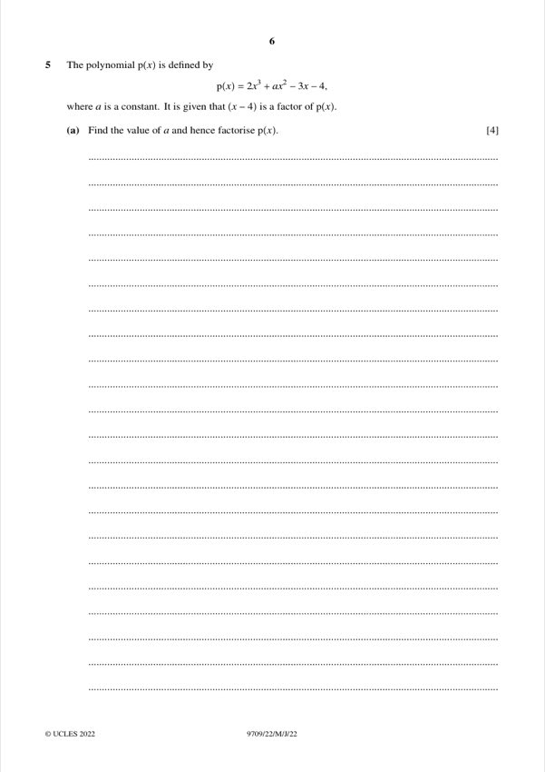
(a) [4] p(x) = 2x³ + ax² − 3x − 4 with (x − 4) a factor. Find a and factorise p(x).
a = −7, p(x) = (x − 4)(2x² + x + 1)
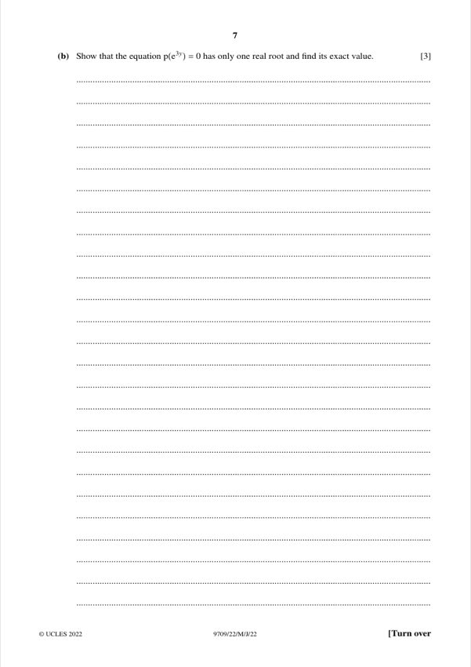
(b) [3] Show that p(e³ʸ) = 0 has only one real root and find its exact value.
y = (1/3) ln 4
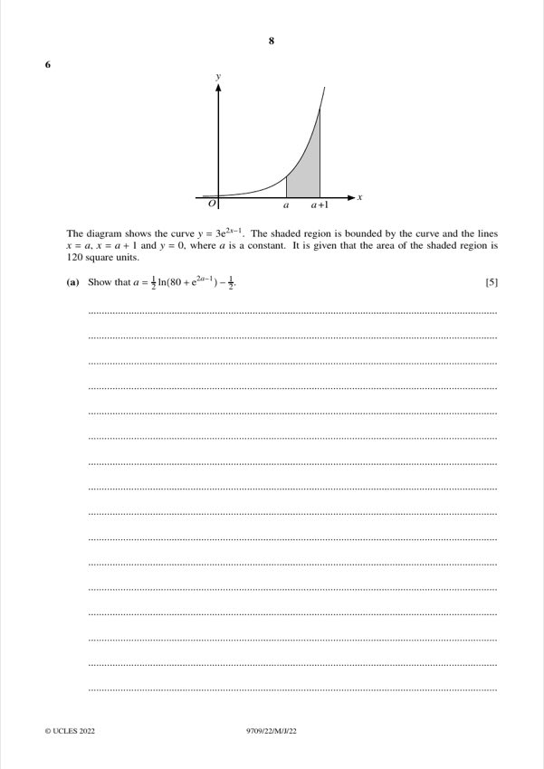
(a) [5] The curve y = 3e²ˣ⁻¹ with shaded area 120 between x = a, x = a + 1 and y = 0. Show a = ½ln(80 + e²ᵃ⁻¹) − ½.
Shown
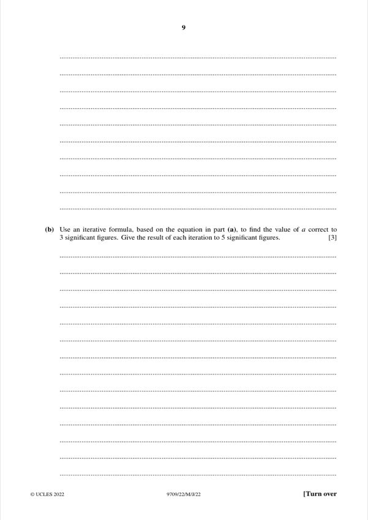
(b) [3] Use the iterative formula from (a) to find a to 3 s.f.
a = 1.76
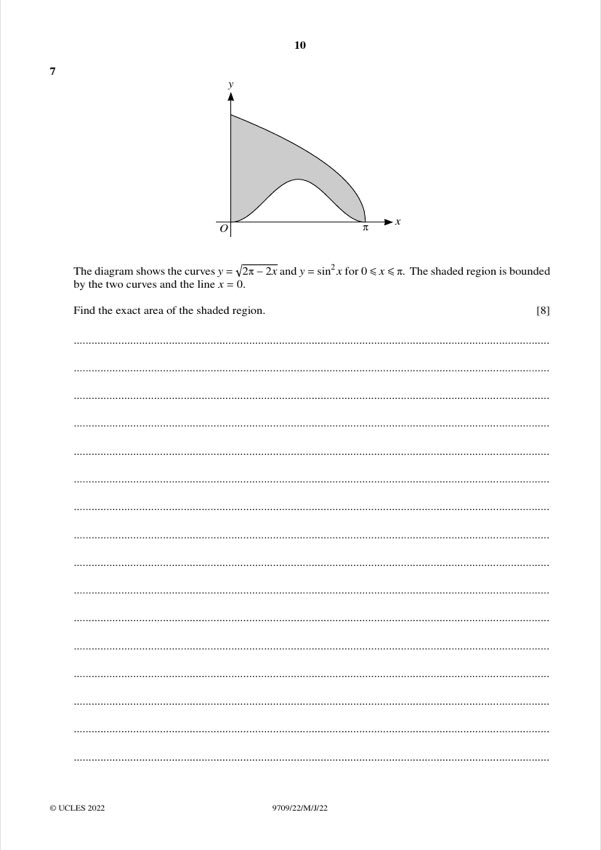
The curves y = √(2π − 2x) and y = sin²x for 0 ≤ x ≤ π. The shaded region is bounded by the two curves and x = 0. Find the exact area.
Area = (2π)^(3/2)/3 − π/2 ≈ 3.68
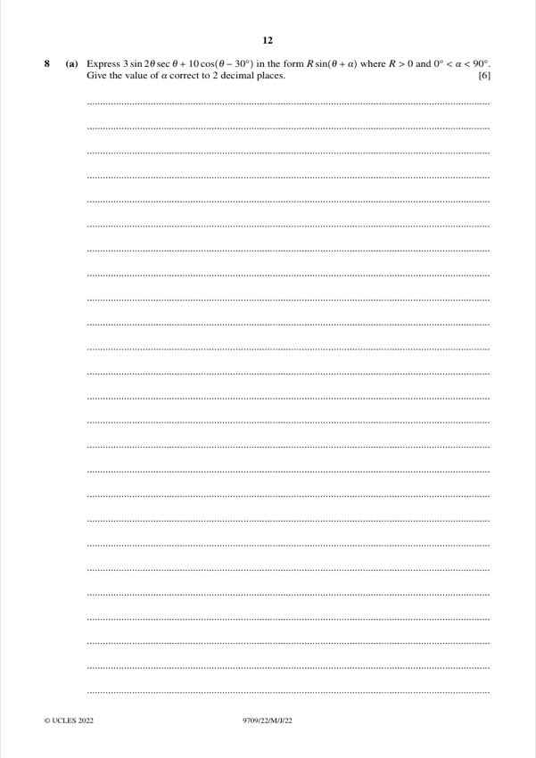
(a) [6] Express 3sin2θ secθ + 10cos(θ − 30°) in the form R sin(θ + β), with R > 0 and 0° < β < 90°.
14sin(θ + 38.21°)
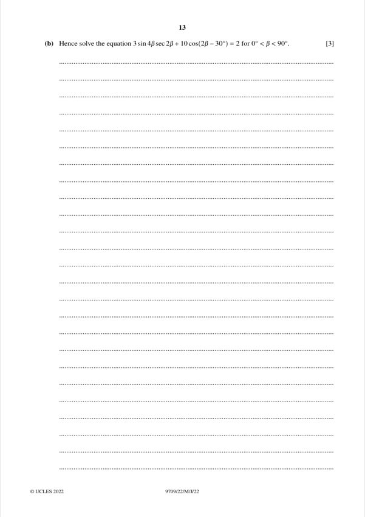
(b) [3] Hence solve 3sin4φ sec2φ + 10cos(2φ − 30°) = 2 for 0° < φ < 90°.
φ = 66.8°